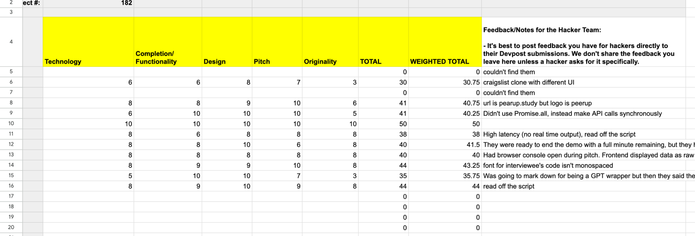
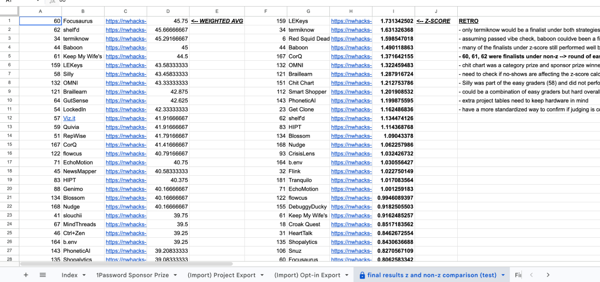
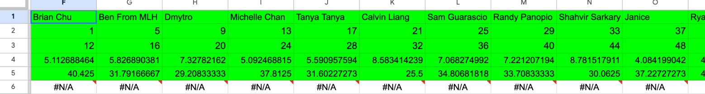
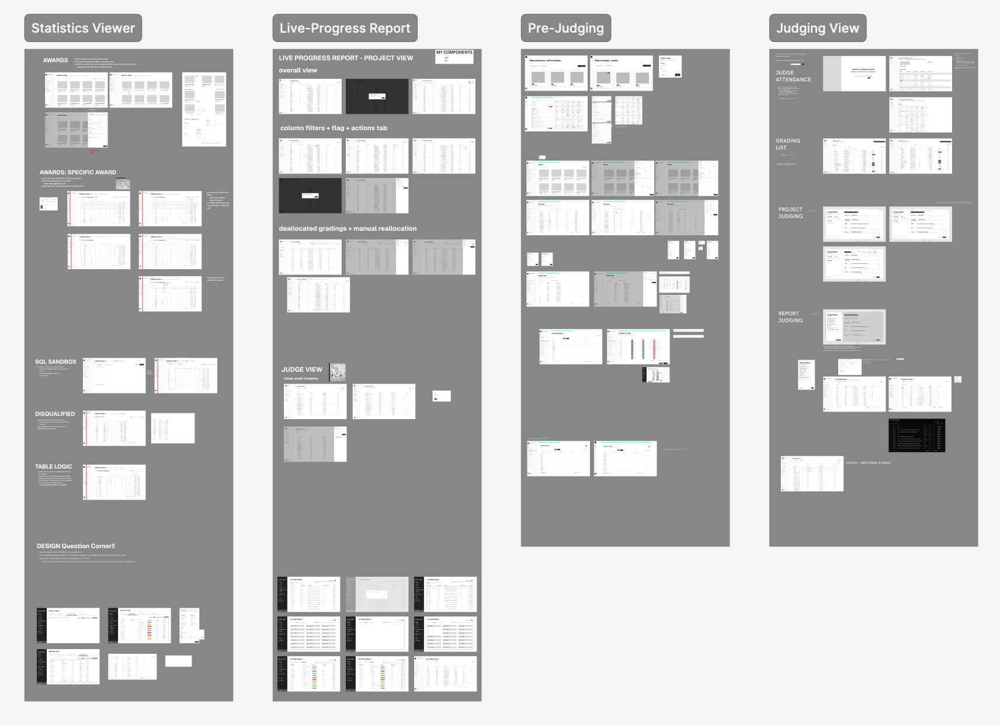
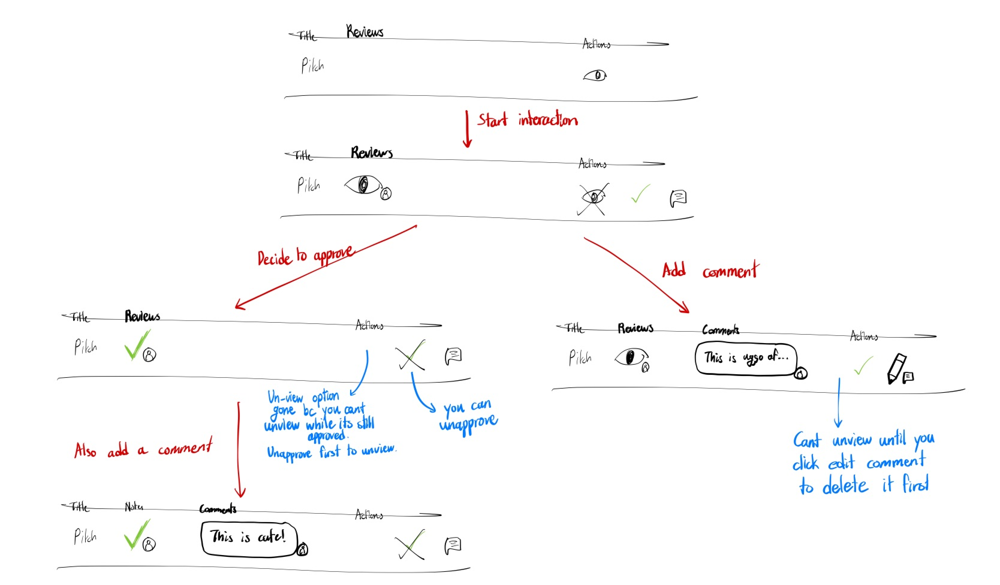
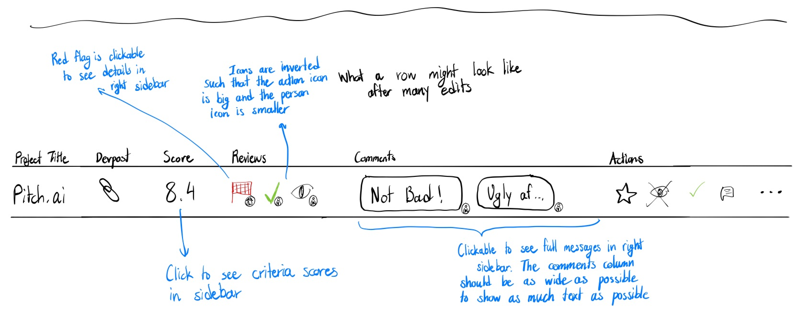
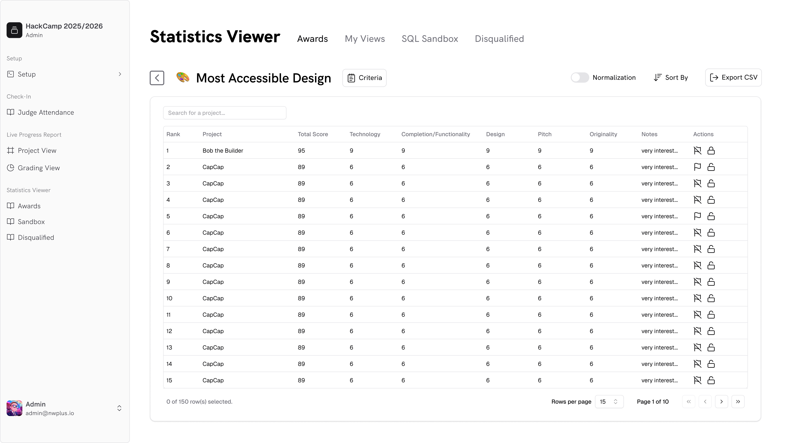
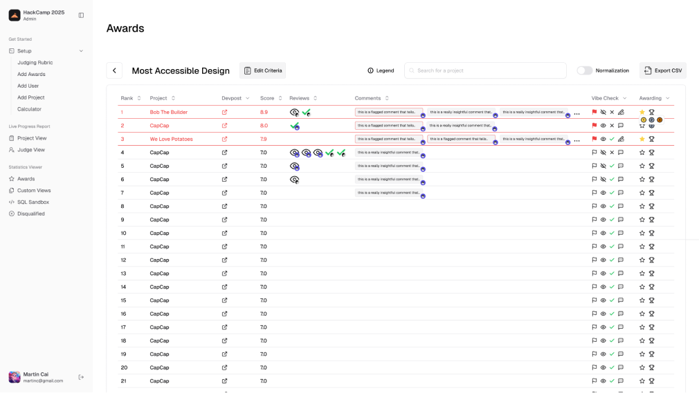
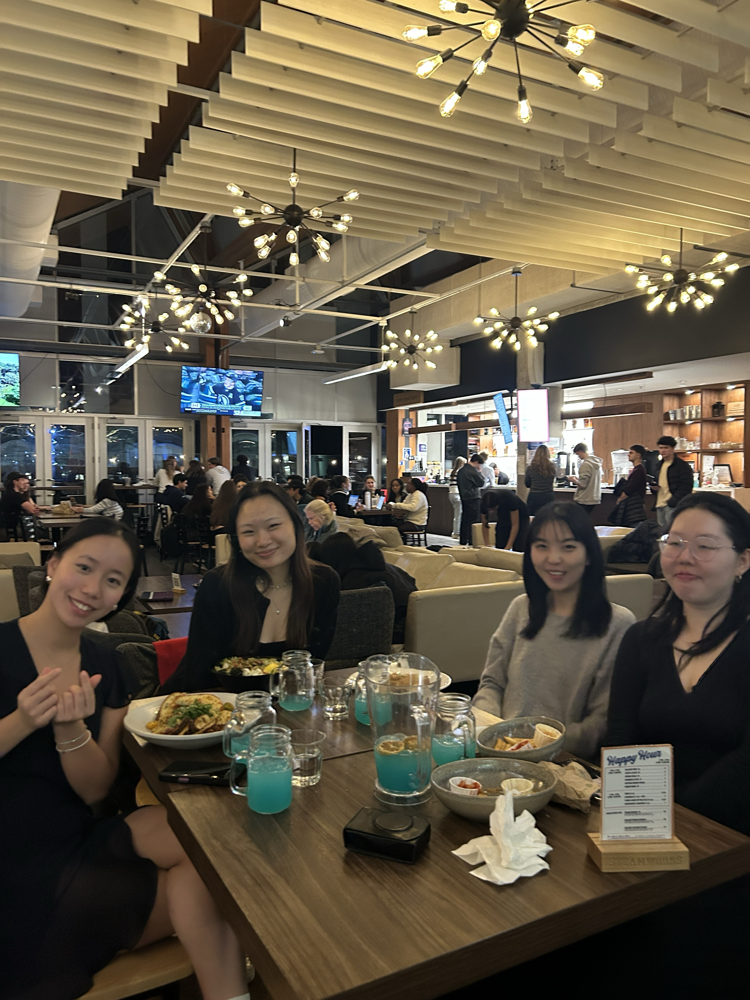

Hackathon Judging Portal
A judging system designed to replace spreadsheet-heavy hackathon operations with a connected workflow for assigning judges, reviewing projects, and making award decisions.
The problem
nwPlus is a student-run organization that runs Western Canada's largest hackathons. With hundreds of participants and projects, judges had to grade hundreds of individual submissions in Google Sheets while organizers managed the whole process by hand. It was inefficient, confusing, and largely repetitive.



So we asked:How can we help hackathon organizers and judges turn messy project data into decisions they can trust and act on quickly?
To answer that, we started with pain points and requirements. We sat down with the developers, the logistics team, and our main stakeholders and users, to figure out what the system actually had to do and the constraints it needed to work within. Those conversations turned into the baseline flow below.
From our user discovery sessions with organizers and judges, the same pain points surfaced:
- Clarity: data was scattered across tabs with minimal labelling; only a few people actually understood what was going on.
- Efficiency: judges manually entered scores into formulas across multiple sheets; organizers then had to corroborate all of them together.
- Collaboration: only assigned organizers knew what was going on and what results meant; it was hard to loop anyone else in to help.
This created stress during the most time-sensitive moment of the event, and made it hard to explain why certain projects won.

The end-to-end judging workflow.
My scope
The team designed the full end-to-end flow together: from event setup and rubric creation to assigning judges, scoring, and awards. Within that system, my focus was the Statistics Viewer.
This is where organizers go once judging is underway to:
- Create or edit awards with criteria scores
- See project rankings and data for a specific award
- review and look for red flags in a project
My goal was to make reviewing projects and locking in winners feel clear and trustworthy, even when the underlying data is still incomplete or changing.

Design insights
During early stage design, I conducted group walkthroughs with 4 target users to validate task flows. I needed to see if the an organizer's mental model of reviewing projects for an award matched with the statistics workflow I had designed.
Originally we had a simple flagging and winner choosing system, where organizers could flag a project and lock a winner in. However after these walkthroughs we figured organizers would need more trust and information to make decisions like this, thus the multi-step review system was born.
The multi-step review system gives organizers four actions on any project: viewing it, approving it, flagging it, or starring it. They can also leave comments directly on a project.




Refining the details
On the visual side, the signifiers for flagged projects and winners weren't working as intended. Users said it was easy to miss when a project was flagged because the icon didn't stand out enough. To fix this, I added a stronger visual state: a red highlight around flagged rows plus a clearer flag icon.
The reason behind a flag mattered too, so I added flag notes. Now organizers can quickly spot flagged projects in the table, see which judge raised the flag, and read their reasoning before making a final decision. (See before and after figures above.)
The completed portal
The result is a Statistics Viewer that lets organizers move through awards one by one, see ranked projects with their scores, catch anything that needs a second look, and finalize decisions in the same place.
After months of hard work, the design has been passed down for development. Building is still in progress: stay tuned for the live portal to be used during nwHacks 2027!
Reflection
Perhaps the project I've learnt the most from, design wise and also people-wise. Some nifty things I've learned below.
- Be ready to reinvent workflows. Even if it's painful, don't be afraid to redesign your own work when you find a better way!
- Some components (eg; tables!) can be difficult to work with, but sticking with them and you'll discover some new shortcuts and tools.
- Time your discussions and interviews. Step in when conversations go off on tangents so you can protect everyone's energy and keep things moving.

the nwDesign team!